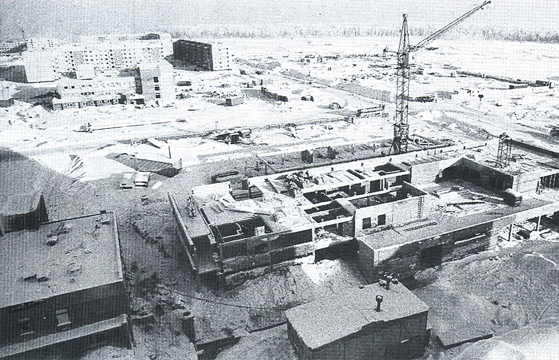
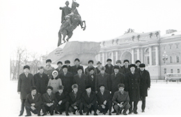
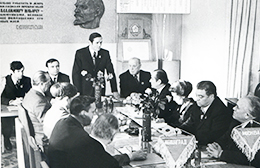
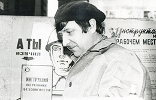

Современная компания с богатой историей
«Авантел» — крупный телекоммуникационный холдинг на российском рынке В2В. 12 лет мы предоставляем услуги связи по всей России и являемся признанными экспертами в области оказания услуг телефонной связи и передачи данных. За это время нашими клиентами стали более 7000 компаний. В иъ числе банки, издательские дома, медицинские центры и другие предприятия крупного, среднего и малого бизнеса.
1953-1975
3 сентября 1953
Открытое акционерное общество «Управление механизации №79» - предприятие, которое осуществляет деятльность в области промышленной безопасности (эксплуатация, монтаж, демонтаж, перевозка башенных кранов) и является одним из самых крупных предприятий строительной отрасли в Республике Беларусь.
Управление механизации было создано 3 сентября 1953 года на базе участка механизации приказом Министерства городского и сельского строительства (МГиСС).
15 января 1958
Импульсом для создания управления послужило начавшееся в 1950-е годы массовое строительство жилья и промышленных объектов в городе Минске. Вскоре управление передали спецтресту № 16 «Строймонтаж МГиСС». в 1958 году спецтрест № 16 «Строймонтаж МГиСС» переименовали в трест № 19 «Промтехмонтаж», а входящее в его состав управление башенных кранов № 4 — в управление механизации № 79
3 июля 1953
Открытое акционерное общество «Управление механизации №79» - предприятие, которое осуществляет деятльность в области промышленной безопасности (эксплуатация, монтаж, демонтаж, перевозка башенных кранов) и является одним из самых крупных предприятий строительной отрасли в Республике Беларусь.
Управление механизации было создано 3 сентября 1953 года на базе участка механизации приказом Министерства городского и сельского строительства (МГиСС).
1975-1980
21 сентября 1976
Открытое акционерное общество «Управление механизации №79» - предприятие, которое осуществляет деятльность в области промышленной безопасности (эксплуатация, монтаж, демонтаж, перевозка башенных кранов) и является одним из самых крупных предприятий строительной отрасли в Республике Беларусь.
  
3 июля 1953
Открытое акционерное общество «Управление механизации №79» - предприятие, которое осуществляет деятльность в области промышленной безопасности (эксплуатация, монтаж, демонтаж, перевозка башенных кранов) и является одним из самых крупных предприятий строительной отрасли в Республике Беларусь.
Управление механизации было создано 3 сентября 1953 года на базе участка механизации приказом Министерства городского и сельского строительства (МГиСС).